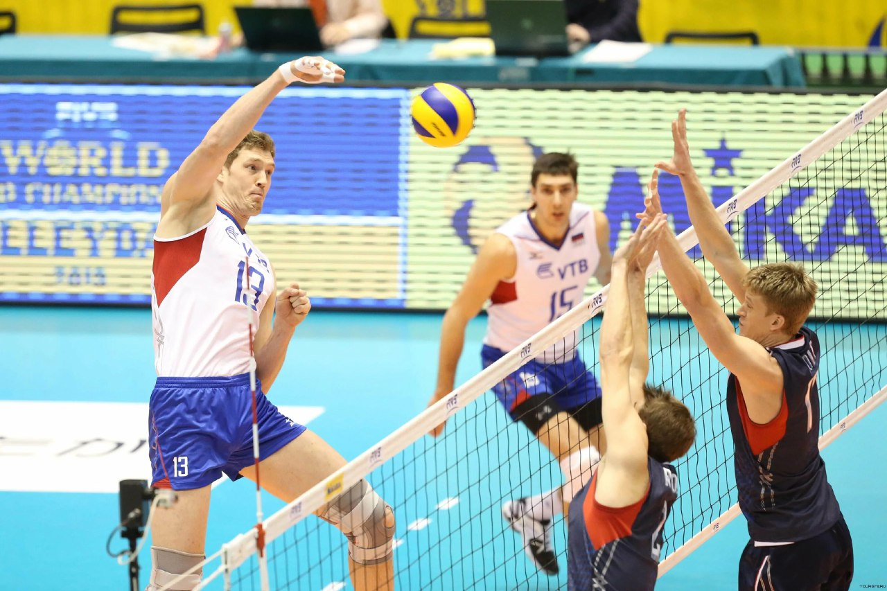
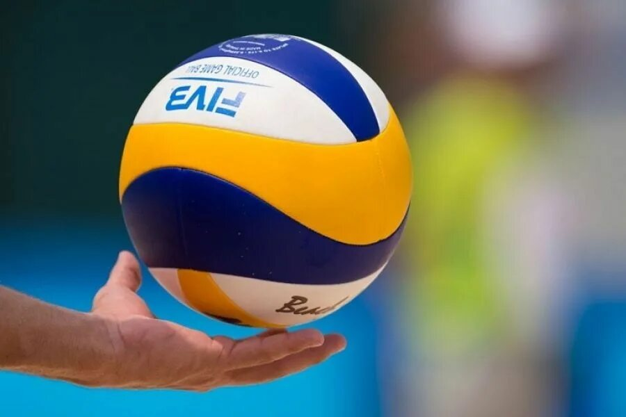
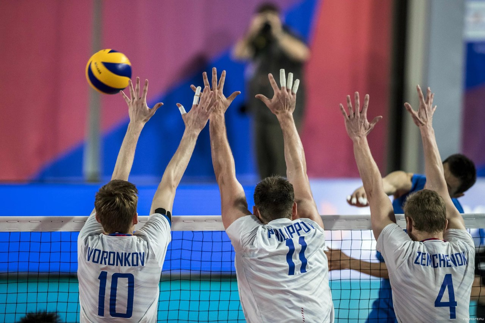

Волейбол — это командный вид спорта, который играется на прямоугольной площадке, разделенной сеткой, где каждая команда стремится набрать очки, отправляя мяч через сетку на поле соперника.
Игроки используют комбинацию навыков, таких как подача, передача, установка, атака и блокировка, чтобы переиграть своих противников.
С акцентом на командной работе, общении и быстром принятии решений, волейбол является захватывающим и увлекательным видом спорта, который способствует физической подготовке и координации.
